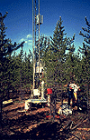

P.I.(s): Dean E. Anderson, Robert G. Striegl -- United States Geological Service (USGS)
Co-I(s): E. McConnaughey, David I. Stannard -- USGS
Objectives: To investigate carbon, water and energy fluxes in boreal forests through an integrated approach involving flux estimates across the atmosphere-forest and soil-atmosphere boundaries. Eddy correlation measurements of CO2 latent and sensible heat fluxes, and momentum will be made above a young Jack Pine stand in SSA. Concentration profiles of CH4, 12CO2, and 13CO2 were determined within the canopy during one IFC. Soil-atmosphere flux studies employed soil depth vs. gas concentration measurements, flux chambers and diffusion modelling to determine source and movement of CH4, 12CO2, and 13CO2 in the air-soil-water continuum. The distribution and storage of carbon species in the soil profile will also be determined. Long-term carbon accumulation will be evaluated by 14C decay of soil carbon. Net, incoming and PAR radiation, leaf photosynthesis, and certain soil parameters (heat flux, thermal profile) were measured at the site.
|  Base of the flux tower at SSA-YJP | Young jack pine trees |
Objectives:
Measurements of above and within canopy fluxes of CO2, latent and sensible heats will be made during a growing season. Combined with soil gas effluxes of CO2 and CH4 the data will be used to determine daily and seasonal patterns in carbon fluxes, evapotranspiration, and in environmental controls regulating the partitioning of available energy and net ecosystem productivity (NEP). Comparisons will be made between young and mature jack pine stands in relatively close proximity of one another in terms of NEP and water use.
Types of Data Collected:
Period of Measurement:
Measurements began during IFC-1 and ended a day after IFC-3. Equipment operated almost continuously. Notable is lack of CO2 data following a lightning strike and malfunction of CO2 sensor June 16-20, July 10-19. CO2 profile was not operational until IFC-2. Forest floor sensible and latent heat fluxes record has numerous lapses due to equipment problems. Considering all measurements, IFC-3 has the most complete record.
TF Overview || TF-1 | TF-2 | TF-3 | TF-4 | TF-5 | TF-6 | TF-7 | TF-8 | TF-9 | TF-10 | TF-11
 Send a data request to the BOREAS Data Manager (BOREAS Investigators only)
Send a data request to the BOREAS Data Manager (BOREAS Investigators only)
E-Mail a comment on this page to the curator 
Send e-mail to Fred Huemmrich, the BORIS representative for the TF group
Return to the TF Overview
Return to the BOREAS Science Groups Overview
Return to the BOREAS Home Page
Last Updated: October 30, 1997
{kind=link}
{kind=link}